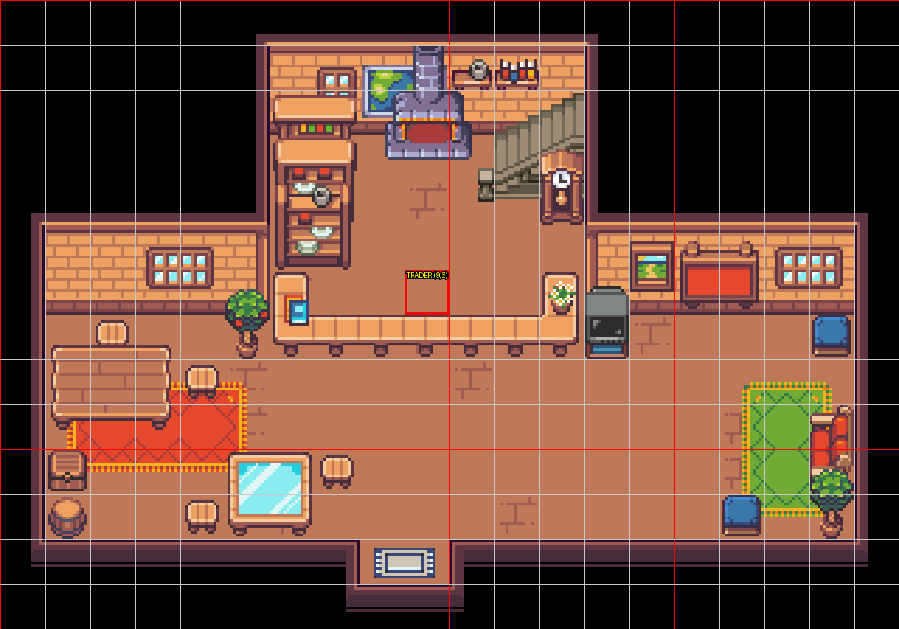
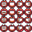
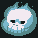
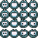
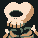
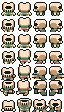

vị trí trader đứng, xoay mặt xuống dưới có đúng 1 ô: Tiled (9,9) → tọa độ game (9,6) (do map crop 3 hàng trống trên đỉnh). Ô đỏ dưới đây chính là chỗ NPC đứng.
(9,9) hiện không có sàn (layer sàn đất = 0) — trader sẽ đứng trên lỗ trống. Tô thêm 1 ô sàn ở đó.visible=True với gạch 289 (trông như sàn nên tạm ổn), nhưng lúc chốt mik sẽ ẩn/xóa layer marker để file map sạch — tọa độ đã ghi nhận rồi.(9,7)) là tường, không đứng được. Không sao cả — luật tương tác chỉ cần đứng cạnh (kề trái/phải (8,6)/(10,6) rồi bấm E là nói chuyện được). Nếu bạn muốn player đứng đối diện phía dưới cho "đúng facing", thì dời bức tường ở Tiled (9,10) đi chỗ khác.
Monster/Skull, sheet 64×64. Hộp sọ bay, mắt đỏ — hợp vai "thương nhân chợ đen". Không có walk riêng (đứng yên thì không cần).


Monster/SkullBlue, sheet 64×64. Bản xanh "ma trơi" — nếu muốn Skull trông ma mị, phát sáng trong nhà.


Character/SkeletonDemon, sheet 64×112 + walk riêng. Bộ xương có tay chân, đứng sau quầy "như người bán hàng" — tốn công crop idle/walk như thương nhân lang thang đã làm.
Vì nó luôn đứng trong nhà trade (khác với thương nhân lang thang đi rong + mất tích ngoài phiên), mik gợi ý vai "chủ sàn chợ đen":
Skull: đúng như bạn muốn (id trong code là skull, tên hiện ra là Skull:).Bạn chốt: mẫu sprite (A/B/C) + nó bán gì / thu mua gì + câu chào đầu tiên là mik code + deploy luôn. Chưa build gì cả theo ý bạn 👍